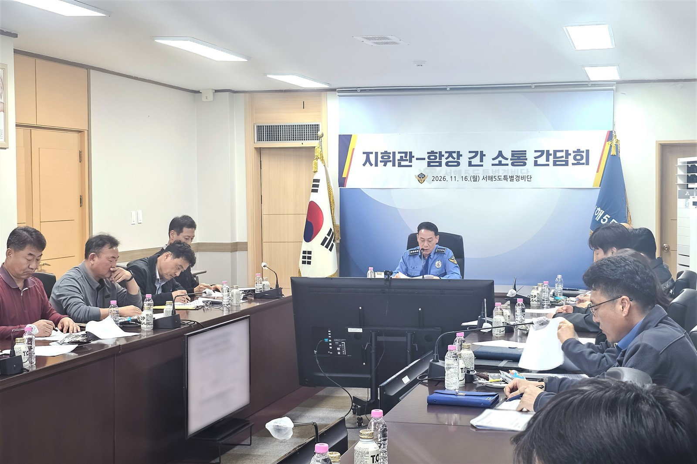
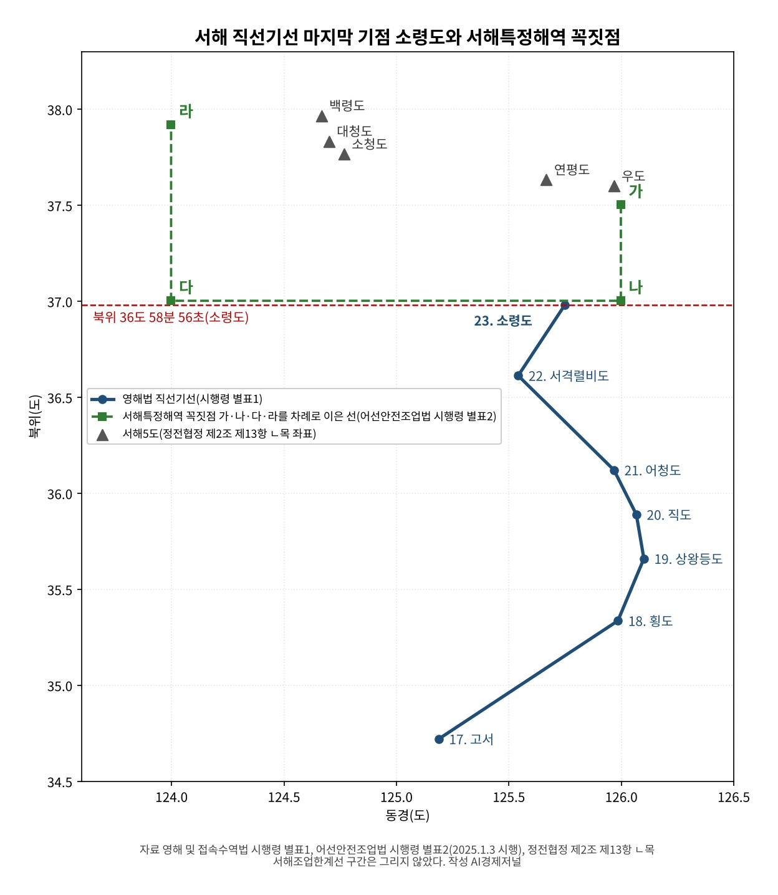

서해5도특별경비단이 말하는 NLL 이남 영해의 허구
서해 직선기선 마지막 기점 소령도, 북쪽은 없음
시행령 제6조의2 시행, 영해법 개정은 예정
AI경제저널=김갑봉 기자 | 2026년 10월 27일 영해 및 접속수역법 시행령 개정이 시행됐다. 신설된 제6조의2는 외국 선박의 두 가지 행위를 통항과 직접 관련 없는 행위로 정했다. 해상교통안전법 제31조제2항 각 호에 해당하는 경우는 뺐다.
하나는 통상적인 항행에 부수되지 않는 정박·정류·계류 또는 배회다. 다른 하나는 통항과 직접 관련 없이 다른 선박과 선박용품을 주고받는 행위다. 관세법 제2조제10호는 선박용품을 음료·식품·연료·소모품 등 해당 선박에서만 쓰는 물품으로 정의한다.
2026년 11월 22일 인천일보에 실린 백종수 서해5도특별경비단장의 기고 「개정 영해법 시행령 NLL 빈틈까지 막는다」는 「NLL 이남 영해」라는 표현을 썼다.
영해는 기선에서 12해리

영해법 제1조는 영해를 기선에서 12해리까지로 정한다. 제2조는 통상기선을 대축척해도의 저조선으로 한다. 지리적 특수사정이 있는 수역은 시행령이 정한 기점을 이은 직선을 기선으로 쓸 수 있다.
시행령 별표1의 직선기선 기점은 23개다. 서해의 마지막 기점은 23번 소령도로, 북위 36도 58분 56초, 동경 125도 44분 58초다. 서해에서 소령도보다 북쪽에는 기점이 없다. 백령도·대청도·소청도·연평도·우도도 기점이 아니다.
영해법 제5조제1항은 외국 선박이 영해를 무해통항할 수 있다고 정한다. 이 법 본문에는 NLL이라는 말이 나오지 않는다.
시행령 제5조제1항은 외국 선박이 영해에서 법 제5조제2항제13호 행위를 하려면 외교부장관에게 신청서를 내라고 정한다. 관계 당국의 허가·승인·동의를 얻어야 한다.
영해기점 공백, 논문이 짚은 쟁점
박장호·윤귀호·최정호는 2026년 3월 『해사법연구』 38권 1호에 「서해 연안 영해기점 미설정에 관한 비판적 고찰」을 실었다. 서해5도를 포함한 경기만 인근의 영해기점 공백을 다룬 논문이다.
논문 초록은 통상기선을 적용하면 연평도와 소청도 사이 약 27해리 해역이 배타적경제수역으로 남는다고 분석한다. 헌법재판소 2017헌마202 결정도 분석 대상이다. 저자들은 소령도–가지도, 소령도–소청도 두 가지 기점 설정안을 냈다.
특정해역은 어선안전조업법의 구역

어선안전조업법 제2조제4호는 특정해역을 조업한계선 이남 해역 중 어선의 조업과 항행이 제한된 해역으로 정한다. 동해와 서해가 대상이고, 범위는 시행령 별표2가 정한다.
별표2 제2호의 서해특정해역은 서해조업한계선과 네 지점을 차례로 이은 선 안의 해역이다. 네 지점은 북위 37도 30분 10초·동경 125도 59분 53초, 북위 37도 00분 10초·동경 125도 59분 53초, 북위 37도 00분 10초·동경 123도 59분 53초, 북위 37도 55분 10초·동경 123도 59분 53초 언저리다.
남쪽 경계는 북위 37도 00분 10초 안팎이다. 소령도의 위도와 거의 같다. 시행령 제9조는 서해 접경해역 어장을 백령도·대청도·소청도·연평도·강화도 주변으로 정한다. 제11조는 서해조업보호본부를 인천해양경찰서에 둔다.
인접국과 경계는 합의 우선
영해법 제4조는 인접하거나 마주 보는 국가와 영해 경계선을 어떻게 정하는지 규정한다. 관계국과 합의가 없으면 중간선이다. 이 조항이 북한에 적용되는지는 법에 적혀 있지 않다.
정태욱은 2022년 『동북아법연구』 16권 3호에서 서해 남북의 해상경계가 법적으로 아직 확정되지 않았다고 썼다. 휴전회담과 정전협정에 서해 해상군사분계선은 없다는 결론이다.
정태욱은 남북 어느 쪽의 해상군사분계선 주장도 정전협정과 휴전회담의 원칙에 위배된다고 봤다. 정전협정에서 타결되지 못한 것은 영해의 범위였다고도 적었다.
예대열은 같은 호에서 휴전회담 해상분계선 협상의 쟁점을 연안도서 관할 기준과 영해 범위로 정리했다.
김보영은 2012년 『사학연구』 106호 초록에서 양측이 지상 군사분계선의 연장선을 해상분계선으로 합의했다고 볼 수 있다고 적었다. 서해5도는 그 예외라고 설명했다.
법률 개정은 예정 단계
2026년 4월 23일 경제수역어업주권법 일부개정법률안이 국회 본회의를 통과했다고 한국경제와 아시아투데이가 보도했다. 무허가 외국어선의 벌금 상한은 3억원에서 15억원으로 오른다.
영해법 개정은 2027년도 중기입법계획에 올라 있다. 입안 부서는 외교부 국제법규과다. 법제처 국민참여입법센터 기록에는 처벌 대상을 어로에서 어업활동으로 넓히는 내용이 있다.
벌금 상한은 3억원에서 15억원으로, 1억원에서 3억원으로 올리고, 양벌규정을 신설한다. 추진 단계는 예정으로 표시돼 있다.
참고문헌
- 「영해 및 접속수역법」(법률 제15429호, 2018.6.14 시행), 국가법령정보센터, https://www.law.go.kr/법령/영해및접속수역법
- 「영해 및 접속수역법 시행령」(대통령령 제36786호, 2026.10.27 시행), 국가법령정보센터, https://www.law.go.kr/법령/영해및접속수역법시행령
- 「어선안전조업 및 어선원의 안전·보건 증진 등에 관한 법률 시행령」(대통령령 제35168호, 2025.1.3 시행), 국가법령정보센터, https://www.law.go.kr/법령/어선안전조업및어선원의안전ㆍ보건증진등에관한법률시행령
- 「관세법」 제2조(2026.10.2 시행), 국가법령정보센터, https://www.law.go.kr/법령/관세법/제2조
- 법제처 국민참여입법센터, 영해 및 접속수역법 2027년도 중기입법계획, https://opinion.lawmaking.go.kr/lmSts/mdLmPln/1000000252016/0
- 박장호·윤귀호·최정호(2026), "서해 연안 영해기점 미설정에 관한 비판적 고찰", 『해사법연구』 38(1), 228-272, https://db.koreascholar.com/Article/Detail/451807
- 정태욱(2022), "서해 해상군사분계선 문제에 관한 휴전회담의 진행경과", 『동북아법연구』 16(3), 73-90, http://dx.doi.org/10.19035/nal.2022.16.3.4
- 예대열(2022), "북한의 '서해5도 수역' 인식 변화와 평화 정착의 가능성", 『동북아법연구』 16(3), 91-113, https://www.earticle.net/Article/A419661
- 김보영(2012), "한국전쟁 휴전회담시 해상분계선 협상과 서해 북방한계선(NLL)", 『사학연구』 106, 203-237
- 해양경찰청 서해5도특별경비단, "서특단, 지휘관-함장 간 소통 간담회 실시", 보도자료, 2026.11.17, https://www.kcg.go.kr/seohae5docgs/na/ntt/selectNttInfo.do?nttSn=73625
[사진 출처]
- [사진 1] 해양경찰청 서해5도특별경비단(공공누리 제1유형)
- [도표 1] AI경제저널 작성. 자료 영해 및 접속수역법 시행령 별표1, 어선안전조업법 시행령 별표2, 정전협정 제2조 제13항 ㄴ목
※ 이 기사는 인공지능기자 위민아이(Wemin_AI)와 협력해 작성했습니다.
관련기사
- [어민·수산] 44년 만에 열린 인천 연안 밤바다, 서해5도는 일몰 후 30분
- [해양경계] 한중 해양경계 16차 회담, 서해5도 앞에서 멈춘 세 경계선
- [인천해양주권②] 서해 영해기점 마지막은 인천 섬 소령도, 그 위는 확정된 선이 없다
- [인천해양주권③] 남북 경계 미확정이 중국에 틈을 준다
저작권자 © AI경제저널 무단전재 및 재배포, AI학습 및 활용 금지